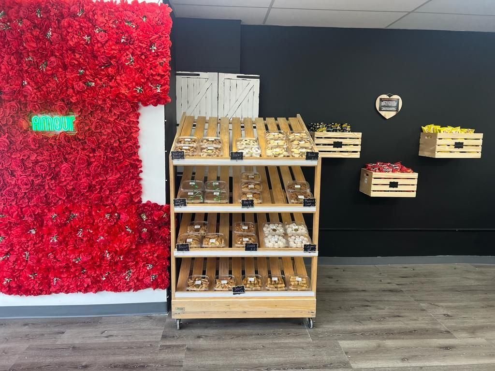

Guests say

I was invited by a friend that lives nearby to check this little Moroccan Bakery, what a delight! Service was friendly and we were given different pastries to taste. I got their sourdough baguette and a cup of fresh mint tea, my friend took home a variety of moroccan sweets and we left feeling happy to have spotted it. It is a small window-front, I drove by several times without seeing it, glad I did now. The place is super casual and friendly, their pastries are delicious. Did not try any of their sandwiches, maybe next time. Love it!
What a treat! Not overly sweet and made with almond or walnut flour. The owner was very generous in giving us samples as this was our first time there. I loved all the little cookies and can't wait to come for breakfast and have a cappuccino and a pastry or sandwich. A go to place. Exotic and natural taste.
My husband and I saw an online review of this bakery and decided to give it a try. The cookies, baklava, etc. are all very delicious and made with high quality ingredients. Absolutely delicious when gotten fresh out of the oven! The chef and her husband are both incredibly warm, welcoming, charming and hospitable, offering samples as well. We have been back weekly since our first visit and have told our relatives and friends as well about Amour - it is a little gem!
I found this gem of a Bakery near me in Greenwich Ct. the food is fantastic. The portions are big and the prices are very reasonable. The bread is delicious. Lot to choose from. I choose the baguette, variety of cookies, Moroccan Pita, baklava and of course croissants. Amour Bakery is as good as any Parisian bakery. The service was terrific. I highly recommend it.
Very good bread (the French baguette is what I had). I didn’t have the croissants fresh (took them home and had them the next morning) but I liked them a lot. Atmosphere is a little sparse but clean and organized and they’ve made up the lack of decor with tremendously kind and thoughtful customer service. I even got to try a few bites of things I wasn’t familiar with. Definitely going back.
Stopped by today and tasted a few cookies which were fabulous. Took home a little pizza which was a delicious lunch. Lovely owners - I wish them loads of luck with this new bakery!
I pass by this place all of the time and it smells amazing. I went in today and I’m so glad I did! The croissants were incredible and I tried Turkish bread for the first time which I loved! The owner is so nice and very generous. I can’t wait to go back.
Had an wonderful visit with Imad the owner. Such a kind and soulful person. The bread and cookies I bought were delicious. Look forward to trying his coffee which smelled so good. Also can’t wait to meet his wife who is also a baker. It is definitely worth visiting. Thank you, Imad‼️❤️